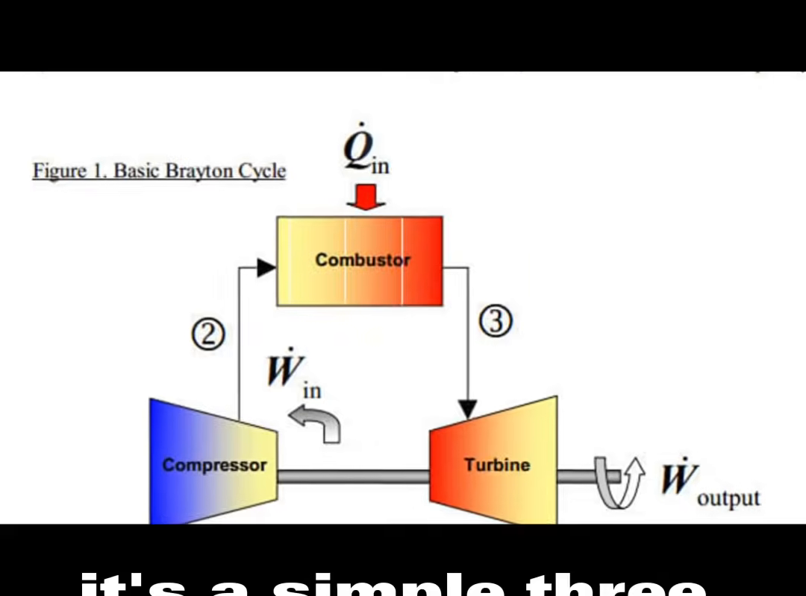
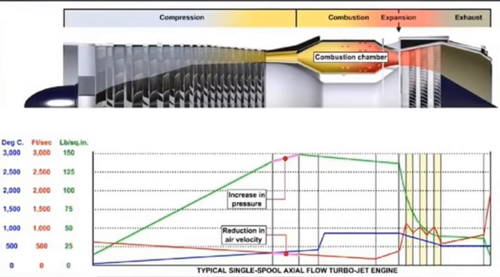

가스터빈 & 터보제트의 핵심 원리:
브레이튼 사이클 (Brayton Cycle)
1872년 조지 브레이튼에 의해 정립된 공기 유동 정상계(Steady-Flow System)의 정수. 복잡한 열역학을 "Compress ➔ Heat ➔ Expand" 3단계 직관적 프로세스로 체계화하고 실시간 수치 시뮬레이션으로 탐색합니다.
01. 기본 브레이튼 사이클 시스템 구조도
압축기, 연소실, 터빈의 3대 필수 부품과 축(Shaft)을 통한 에너지 환원 루프

(1) 외기 흡입 ➔ (2) 압축기(Compressor) 고압화 ➔ (3) 연소실(Combustor)에서 열량($\dot{Q}_{in}$) 투입 ➔ (4) 터빈(Turbine) 단열 팽창 및 축출력($\dot{W}_{output}$) 생성
생성된 축 동력의 상당량이 압축기 축(Shaft)을 통해 $\dot{W}_{in}$으로 자동 환원됩니다.
핵심 메커니즘: 역일비율 (Back-Work Ratio)
증기터빈(랭킨 사이클)에서는 비압축성 액체(물)를 펌프로 가압하므로 펌프 소비 일이 전체 일의 1~2%에 불과합니다.
반면 기체(공기)를 압축하는 브레이튼 사이클에서는 터빈이 생산한 일의 약 40% ~ 60%가 전방 압축기를 구동하는 데 다시 소비됩니다.
👉 따라서 압축기 단열 효율의 극대화가 가스터빈 전체 상용성을 결정하는 가장 결정적인 열쇠입니다.
02. 영상의 3단계 핵심 프로세스 (The 3-Step Dance)
Compress Air ➔ Heat Air ➔ Expand Air 단계별 메커니즘과 내부 압력·속도·온도 프로파일 분석
03. 실시간 브레이튼 사이클 시뮬레이터
파라미터를 조정하여 실시간 P-v 및 T-s 다이어그램과 열역학 성능 지표를 즉각 확인하세요.
⚙️ 제어 파라미터 (Control Inputs)
상태점별 열역학 프로파일 (State Points 1 ~ 4)
| 상태 | 위치 | 온도 T [K] (°C) | 압력 P [kPa] | 비체적 v [m³/kg] | Δs [kJ/kg·K] |
|---|
04. 공학적 트레이드오프: 압력비(r_p) 증가의 딜레마
수식상 압력비가 오르면 효율은 끝없이 오르지만, 터빈 입구 허용 온도($T_{max}$) 한계로 인해 순 출력($w_{net}$)은 급감합니다.
⚠️ 왜 출력이 감소하는가?
압력비($r_p$)가 과도하게 커지면, 압축기 출구 온도($T_2$)가 너무 높아집니다. 터빈 블레이드 내열 한계($T_3 \approx 1,400\sim 1,600^\circ\text{C}$)가 고정되어 있으므로, 연소실에서 가열할 수 있는 여유 온도 폭($T_3 - T_2$)이 좁아져 단위 질량당 순 생산 일($w_{net}$)이 급격히 줄어듭니다.
따라서 실제 상용 가스터빈은 이론상 최대 효율점 대신, 최대 순 출력을 낼 수 있는 최적 압력비($r_{p, opt}$) 주변에서 설계됩니다.
05. 실제 산업 및 항공 응용 분야
초음속 항공 추진에서부터 60% 이상의 열효율을 자랑하는 복합화력발전에 이르기까지
항공 제트 추진 (터보팬/터보제트)
터빈 축동력으로 압축기 및 대형 팬을 돌리고, 터빈 후단의 배기 노즐을 통해 음속 이상의 고속 분사 가스로 반작용 추력(Thrust)을 형성합니다. 단위 중량 대비 출력(Power-to-Weight)이 현존 내연기관 중 가장 우수합니다.
복합화력발전 (CCGT)
가스터빈(브레이튼 사이클) 1차 발전 후 배출되는 약 550°C의 고온 배기가스를 배열회수보일러(HRSG)로 보내 증기터빈(랭킨 사이클)을 2차 구동합니다. 이를 통해 복합 열효율 60% 이상을 달성합니다.
사이클 성능 개량 3대 기술
- • 재생 (Regeneration): 터빈 배기열로 압축 공기를 예열하여 연료 절감
- • 중간냉각 (Intercooling): 다단 압축 과정에서 공기를 냉각하여 압축기 소모 일 대폭 절감
- • 재열 (Reheat): 다단 팽창 과정 중 재연소하여 터빈 총 출력 극대화
06. 기술 문서 이미지 자료실 (Gallery)
기술 해설서 원문에 포함된 고해상도 연구실 점검 사진, CAD 투시도, 압력-온도 프로파일 원본
